Theme "Restaurant Sync" - Guideline
Restaurant Sync
At first, need to choose the theme - Restaurant Sync
Go to Website -> Configuration -> Settings -> Choose a theme -> "Restaurant Sync"
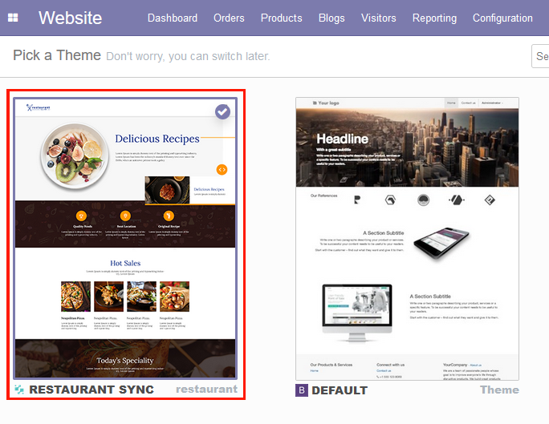
Recipes
For this custom design theme, we need to drag-drop "Recipe" snippet on top of the homepage.
For any other interior pages, we can add this anywhere.
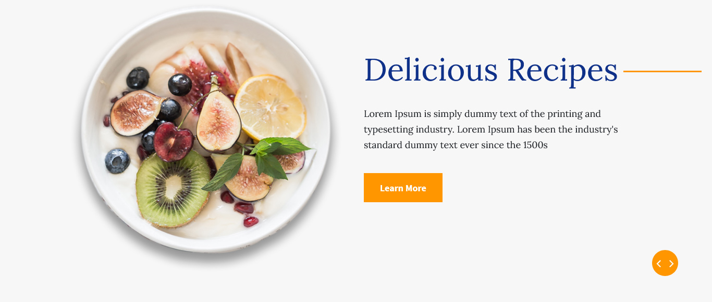
Options
- Add/remove/change the image
- Change indicators
- Add/remove slide
- Change transition and speed
- Change column and block background
- use different layout slide content with images
(left, right and center)
Welcome Message
You can display company profile at a glance with the "Welcome" snippet
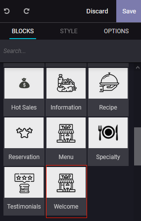
Drag & drop "Welcome" snippet

Options
- Change columns
- Change image with width
- Change column background color
- Change vertical alignment
- Add/change url and text for the button
Organization Information
Display organization highlight information, drag & drop "Information" snippet
Options
- Add/remove/change the background image
- Change column title, short description and icon
- Add parallax effect
- Possible to add a button in the content
Hot Sales
In this snippet, show the four or more sale items, drag & drop "Hot Sales" snippet
Options
- Change Heading/Title
- Change sub title
- Change vertical alignment
- Change block background color
- Change column background color
- Change column title, short description and image
- Duplicate column and change hot sales content
- Add button and add/change url, & text for the button
Today’s Specialty
In "Specialty" snippet, display today's special menu

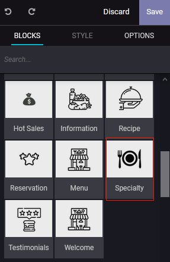
Drag & drop "Specialty" snippet
Options
- Change main title & short description
- Change block background color
- Change columns
- Add parallax effect
- Add/change url, & text for the button
Main Meals
In "menu" snippet, display organization menu
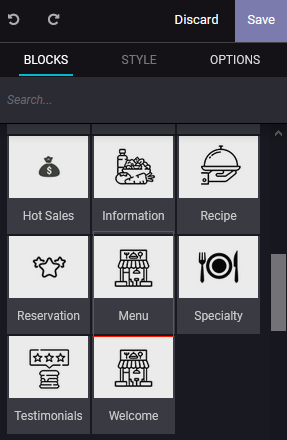
Drag & drop "Menu" snippet
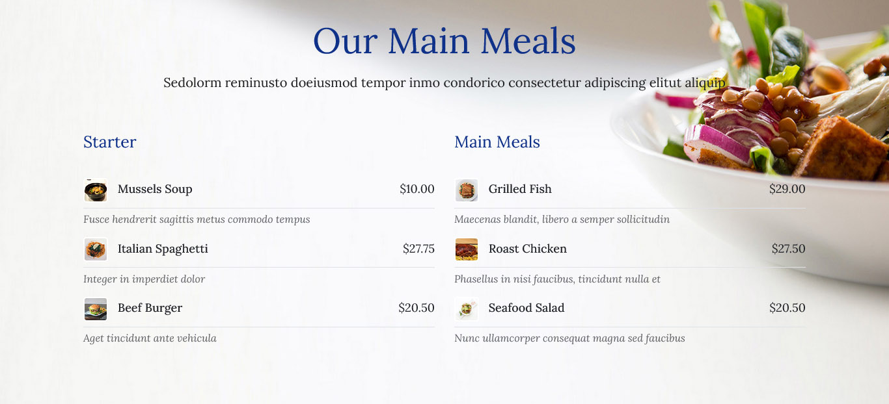
- Change main title & subtitle
- Change block background color & image
- Change columns & column title
- Add/change menu's price, image (preferable size 50x50px), title and short description
Reservations
Reservations or home delivery? Book your table or delivery today with "Reservation", drag & drop
"Reservation" snippet

Options
- Change title & subtitle
- Change block background color & image
- Add parallax effect
- Add/change button's text and url
Gallery
Use the "Images wall" snippet to display of restaurant's photos
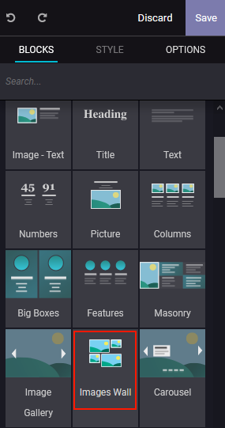
Drag & drop "Images wall" snippet
- Change block background color and images
- Change mode "masonry"
- Change columns "2" or "3"
- Change images spacing "small"
- Change styling "standard"
- Add/remove images
Testimonials
Show the customer review

Drag & drop "Testimonials" snippet
Options
- Change block background color and images
- Set style "default"
- Set transition "slide"
- Add/remove slider (customer review)
- Change blockquote width 25% to 100%
- Change alignment left to right
- Change display
Latest Blog Posts
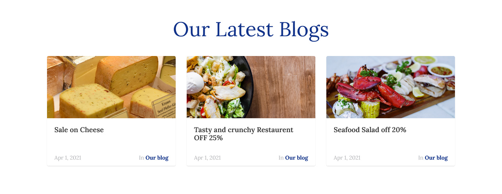
How to create a post for the website
There are two ways:
Go to Website -> Blog -> Create
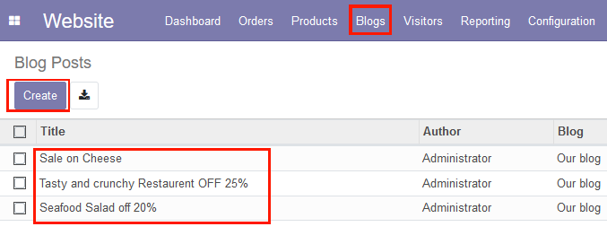
After login, from the top right corner, click New -> New blog post
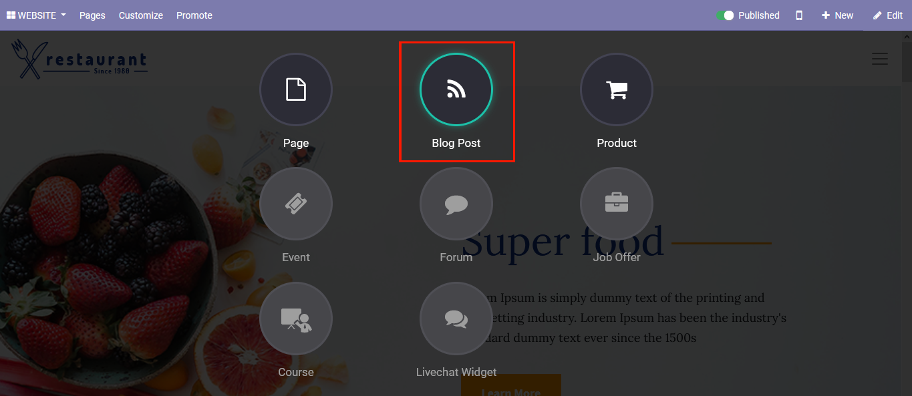
How to configure the blog details page
Options
- Change and remove cover
- Change filter color and intensity
- Add any snippets to show the more content
Header

Options
Go -> edit -> Options and change header settings
- Choose mark template for header
Footer
This is a four columns footer
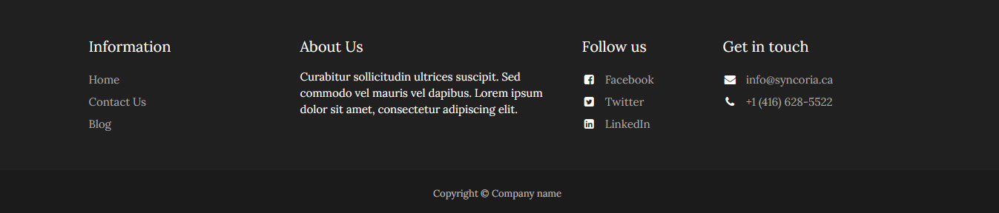
Options
Go -> edit and change footer settings
- Change Column
- Change Template, color, and many more
Options
Go -> edit -> Options and change footer settings
- Choose mark template for footer